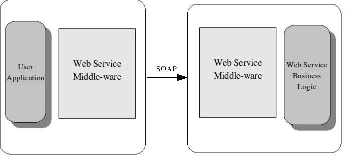
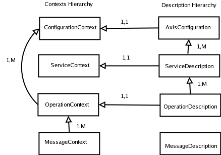
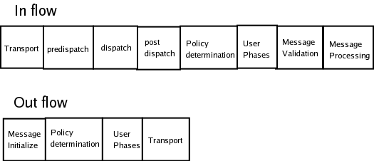

Any architecture is a result of what that architecture should yield, the success of an architecture should be evaluated bases on the requirements the architecture should meet. Let us start our journey in to Axis2 looking at the requirements that are expected from Axis2.
In the SOAP terminology, a participant who is taking part in a Web Service interaction is known as a SOAP Node. Delivery of a single SOAP Message is defined based on two participants, SOAP Sender and SOAP Receiver. Each SOAP Message is sent by SOAP Sender and received by SOAP Receiver, and single SOAP delivery is the most basic unit that builds the Web Service interactions.
Each SOAP Node is written in specific programming language, may it be Java, C++, .NET or Perl, the Web Services allow them to inter operate. This is possible because at the wire each Web Service interaction is done via SOAP, which is common to every SOAP Node.
Web Service Middle-ware handles the complexity SOAP Messaging and let the users to work with the programming language they are accustomed to. Axis2 allows the java users to invoke the Web Services using java representations and handles the SOAP Messaging behind the curtain.
Axis2 handles the SOAP processing, along with numerous other functionalities that make the life of the Web Service Developer convenient. Following are the identified requirements.
Apart from the above functionalities the performance, both in the terms of memory and speed, is a major consideration for Axis2.
Axis2 Core Architecture is built on the three specifications, WSDL, SOAP and WS-Addressing. Other specifications like JAX-RPC and the SAAJ etc are layered on top of the Core Architecture. The WS-Policy might join the core specifications in the near future.
Now having look at the requirements of the Axis2 we can direct our attention to the Architecture.
Axis2 architecture lay out few Principals to preserve the uniformity of the architecture, they are as follows.
Axis2 architecture is modular, the architecture broke the Axis2 in to Seven modules.

Let us look in to the rationale for each Module, and what each does?
Axis2 define a Model to handle the information and all the states are kept in this Model. The Model has a hierarchy for the information and the system manages the life cycle of the objects in that hierarchy.
Handling the SOAP Message is the most important and the most complex task, the efficiency of this is the single most important factor that decides the performance. It make sense to delegate this task to a separate module, and that module, AXIOM provide a simple API for SOAP and XML info-set and while hiding the complexities of the efficient XML processing with in the implementation.
SOAP Processing Model controls the execution of the processing, the Model defines different phases the execution would walk though, and the user can extend the Processing Model at some specific places.
Axis2 define a transport framework that enable user to use different transports, the transports match in to the specific places in the SOAP processing model. The implementation provide few common transports and user may write new ones if he wishes.
Axis2 deployment model allows the user to deploy services, configure the transports, extend the SOAP Processing model per system basis, per service basis, and per operation basis.
Finally Axis2 provides a Code generation tool that will generate server side and client side code along a test case. The generated code would simplify the Service deployment and the service invocation. This would make the Axis2 easier to use.
Information Model has two main hierarchies, the Contexts and Descriptions.
The arrow A-> B means B include A and if letters are 1,1 then B includes one A and letters are 1,M then B includes one or more A.
The two hierarchies are connected as shown in the above figure. The Description hierarchy represents more data that exists through out the lifetime of the Axis2. Examples for such data would Deployed Web Services, Operations, etc. On the other hand, the Context hierarchy holds more dynamic information about things that has more than one instances (e.g.Message Context).
These two hierarchies created a model that provide ability to search for the key value pairs, when the values are search at a given level, they are searched while moving up in the level until a match is found. In the resulting model the lower levels overrides the values in the upper levels. For and example when a value is looked up at the message context and it is not found, it would be looked up at the Operation Context etc, up the hierarchy. The Search is first done up the hierarchy, and if starting point is a Context then it is search in the Description hierarchy as well.
This allows user to declare and override values, and result in very flexible configuration model. The flexibility could be the Achilles heel for the system, as the search, specially for something that does not exists is expensive, yet the in the final analysis developers believe that the flexibility would serve better in this instants and opt for the flexibility.
| Configuration Context | Holds the current state of execution, deep copy of this would essentially make a copy of the Axis. | Axis Configuration | Holds the all global configurations. Transports, global modules and parameters and Services. |
| Service Context | Life cycle of this in not clearly defined. has leave as a future extension point, | Service Description | Hold the Operations and the service level configurations |
| Operation Context | Holds the information about the current MEP instance, maintain the Messages in the current MEP etc. | Operation Description | Holds the operation level configurations |
| Message Context | Holds all the information about the current Message that being executed. | Message Description | Do not hold any information as yet, but can be used as future extension point. |
Please refer to the OM Tutorial
The Architecture identified two basic actions a SOAP Processor should perform, sending and receiving SOAP Messages. The Architecture provides two Pipes (also named as Flows), to perform these two basic actions. Axis Engine or the Driver of Axis2 define two methods send() and receive() to implement these two Pipes. The two pipes are named as In Pipe and Out Pipe, the complex Message Exchange Patterns are constructed by combining these two Pipes.
Extensibility of the SOAP processing Model is provided through the Handlers, when a SOAP Message is being processed the Handlers that are registered would be executed. The Handlers can be registered in global, service, or operation scopes and the final handler chain is calculated combining the Handlers from all the scopes.
The Handlers act as interceptors and they process the parts of the SOAP Message and provide add on Services. Usually Handlers work on the SOAP Headers yet they may access or change the SOAP Body as well.
When a SOAP Message is send from the Client API, a Out Pipe would begun, the Out Pipe invoke the Handlers and ends with a Transport Sender that send the SOAP Message to the target endpoint. The SOAP Message is received by a Transport Receiver at the target endpoint, which read the SOAP Message and starts the In Pipe. The In pipe consists of Handler and end with a Message Receiver, which consumed the Message.
Above explained processing happens for each and every SOAP Message exchanged. Processing that follows may decide to give birth for the other SOAP Message, in which case the more complex Patterns emerge. But Axis2 always view the SOAP Message in terms of processing of a Single Message where as the combination of the Messages are layered on top of that basic framework.
The two Pipes does not differentiate between the Server and the Client, the SOAP Processing Model Handles the Complexity and provide two abstract pipes to the User. Each pipes is set of Handlers, the different areas of the Pipes are given names, and according to the Axis2 slang those are named Phases. The Handler always runs inside a Phase, and the Phase provides a mechanism to specify the ordering of Handlers. Both Pipes has built in Phases, and both define the areas for User Phases which can be defined by the User.
Following Picture shows the two Pipes with their pre-defined Phases, the user defined Phases would be fit in to the User Phases.
Axis2 has the, some inbuilt Handlers that run in inbuilt Phases and they create the default configuration for the Axis2, we will be looking more in to how to extend the default processing Model in the next section.
There are four special handlers defined in Axis2.
Incoming SOAP Message is always received by a Transport Receiver waiting for the SOAP Messages, once the SOAP Message is arrived the transport Headers are parsed and a Message Context is created for the incoming SOAP Message. The the In Pipe is executed with the Message Context. Let us see what would happen at the each Phase of the execution, this process my happen in either in the server or the Client, there is a special case of using the two way transport where the first four phases in the In-Phase most likely to do nothing.
There may be other handlers in the any of the these Phases, users may employ custom Handlers to override the mechanics in the each of these Phases. If there is a response message, that would be initiated by the Message Receiver, yet the Architecture does not aware of the response Message and merely invoke the Message Receiver.
Out pipe is simpler because the Service and the Operation to dispatch is known by the time the pipe is executed. The Out pipe may be initiated by the Message Receiver or the Client API implementation.
We discussed the default Processing Model of the Axis2, ability to extend the Model has been the whole point of spending the energy on the SOAP Processing Model. We shall discuss the extension mechanism for the SOAP Processing Model now.
Idea behind making the each step of the SOAP processing in to Handlers (inbuilt ones we discuss earlier) and placing them in the Phases is to allow Handlers to be placed between those Handlers and to override or affect the default mechanics. There is a two ways the to extend the SOAP Processing Model.
The Handlers can specify the Phase they need to be run, further more they can specify the there location inside a phase via the following information.
SOAP processing Model defines a logical entity called a module that encapsulates two entities, Handlers and Web Service Operations. The Handlers will act in the same way as explained in the first method.
Apart from the extension mechanism based on the Handlers, the WS-* specifications suggest a requirement for add new Operations using modules. For an example once a user add a Reliable Messaging capability to a Service, the "Create Sequence" operation needs to be available to the service end point. This can be implemented by letting the Modules define the operations and once the module is engaged to a service the operations will be added to that service.
A service, operations or the system may engage a module, once the module is engaged the handlers and the operations defined in the module are added to the entity that engages them. Modules can not be added while the Axis2 is running but rater it ll be available once the system is restarted.
There deployment Model provides a concrete mechanism to configure Axis2. Deployment Model has four entities that provide the configuration.
These two files holds the global configuration for the client and server, and provide following information.
Service archive must have a META-INF/service.xml file and may contain the dependent classes. the service.xml file has following information.
Module archive must have a META-INF/module.xml file and dependent classes the module.xml file has Module parameters and the Operations defined in the module.
When the system started up the Axis2 ask the deployment model to create a Axis Configuration, the Deployment Model first find a server.xml or a client.xml file and build the global configuration. Then the Deployment check for the Module archives and then for the service archives, the corresponding services and Modules are added to the Axis Configuration. System will build Contexts on top of the Axis Configurations and the Axis2 is ready to send or receive the SOAP Message. The Hot deployment is allowed only for the Service and in that case a thread will check the repository repeatedly, and add the Service corresponds to the new found Service archives to the repository.
Although the basic objective of the code generation tool has not changed, the Code generation module of Axis2 has taken a different approach to generate code. Primarily the change is in the use of templates, namely XSL templates which gives the code generator the flexibility to generate code in multiple languages.
The basic approach is to set the code generator to generate an XML and parse it with a template to generate the code file. The following figure shows how this shows up in the architecture of the tool.

The fact here is that it is the same information that is extracted from the WSDL no matter what code is generated. Code generator uses the WOM (WSDL Object Model) internally to manipulate the WSDL and passes that information to the emitter which emits an XML. the XML is then parsed with the relevant XSL to generate the code. No matter what the language, the process is the same except for the template that is being used.h
There are three parameters that decide the nature of the Web Service interaction.
Variations of the three parameters can result in indefinite number of scenarios, even though Axis2 is built on a core that support any messaging interaction, the developers were compelled to support only two most widely used Message Exchange Patterns.
Two supported transports are One-Way and the Request-Response scenarios in the
Client API, the implementation is based on a class called MEPClient and there are extensions for each Message Exchange Pattern that Axis2 Client API supports.
The One-Way support is provided by the InOnlyMEPClient and Axis2 provides a class called Call that provides a much simpler interface for the user. The Axis2 supports HTTP/SMTP and TCP transports, in the case of the HTTP transport the return channel is not used and the HTTP 202 OK is returned in the return Channel.
The Request-Response support is provided by the InOutMEPClient and Axis2 provides a class called MessageSender that provides a much simpler interface for the user. The Client API has four ways to configure a given Message Exchange
invokeBlocking() or invokeNonBlocking() methodsDepend on the values for the above four parameter, Axis2 behave differently
Axis2 has two basic constructs for transports, named as Transport In Configuration and Transport Out Configuration. The Message Context has two fields to put the input and the out put transport to be used. Axis behaves according to the transport that is specified in each of the fields.
SOAP Message is arrived at the Server side, the incoming transport is decided by the Transport Listener that accepts the incoming SOAP Message. The transports for the subsequent SOAP Messages that are related to the first message, are decided based on the addressing parameters.
At the Client Side the user is free to specify the transport to be used, as in the Server side the transport for the subsequent SOAP Messages are decided by the addressing.
There Transport In Configuration and the Transport Out Configuration contains following information.
Transport Sender send the SOAP Message over a given transport, each and every transport Out Configuration should define a transport Sender that send the transport.
Transport Receiver waits for the SOAP Messages and for each SOAP Message that arrives, uses the
Axis2 Presently support the following transports